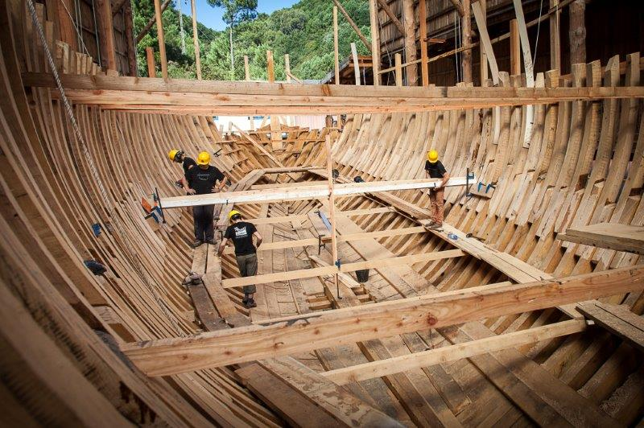
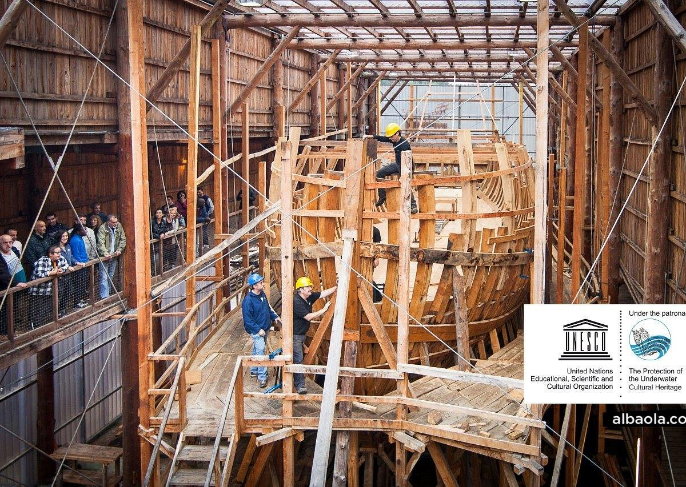

Historia de la Nao San Juan
Siglo XVI
Construido en Pasaia, el ballenero San Juan es un ejemplo de los primeros buques de carga transoceánicos que zarpaban del País Vasco hacia Terranova. Reflejo del esplendor y hegemonía mundial de la industria marítima vasca, se hunde en la costa de Canadá, en Red Bay en el año 1565.

Dibujo que representa la puesta de la quilla en el siglo XVI.
Año 1978
Más de 400 años después el equipo de arqueólogía canadiense de Parcs Canada encuentra el pecio y lo investigan en una excavación submarina ejemplar para el mundo de la arqueología marítima. Después de más de treinta años de estudio, es el buque mercante del siglo XVI que mejor se conoce y se ha convertido en el icono que símboliza el Patrimonio Cultural Subacuático de la UNESCO.

La quilla sacada del agua, siendo medida y analizada por arqueólogos de Parcs Canada.
Año 2013
Dentro de la Capitalidad Cultural Europea Donostia/San Sebastián 2016 y con el apoyo científico del Gobierno de Canadá, se vuelve a construir la nao San Juan en Pasaia. Al igual que unía Europa con América en el siglo XVI, la nao San Juan permitirá a los dos países navegar hacia el futuro a partir de un pasado compartido.

Quilla de la réplica del San Juan (junio 2014)
Proceso de construcción
Con el mismo rigor científico que se investigó el San Juan durante 30 años, ahora, en la construcción de su réplica, se utilizan los mismos materiales encontrados en el pecio y trabajados de igual manera, artesanalmente y respetando el proceso histórico de construcción.
Interior del ballenero
Una quilla de haya de casi 15 metros; 200 robles seleccionados con formas específicas para la estructura; 20 abetos para los mástiles y vergas; 560 metros cuadrados de paño y 6 kilómetros de sogas de cáñamo conforman esta singular embarcación de 28 metros de eslora, 7,5 de manga y 6 metros de puntal conformando 3 cubiertas.
Nao San Juan, exterior
Puedes conocer más detalles web oficial de Albaola